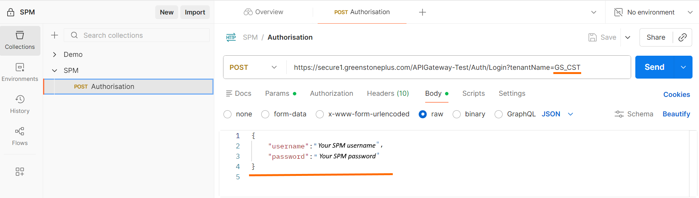
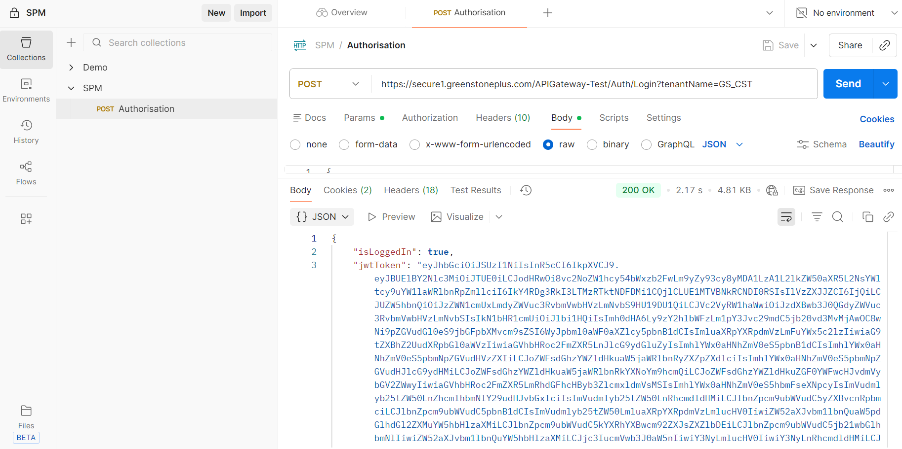
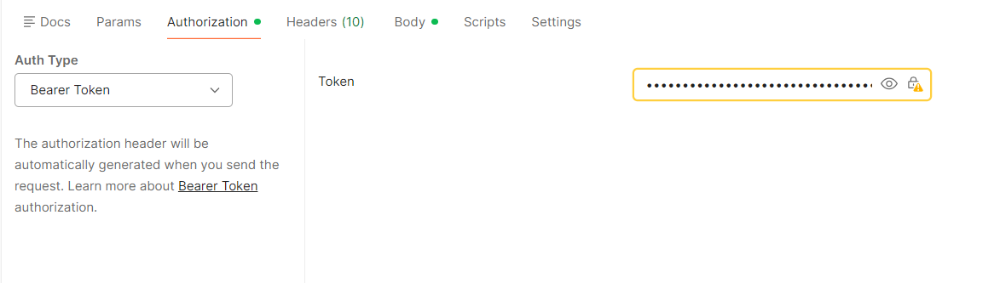

The following are the API URLs you can use, dependent on whether it’s a production system or test system.
Throughout this guide, these URLs are referred to as the {baseUrl}.
Every user of the API needs to authenticate to use the API to obtain a token. This token can then be used in subsequent API calls.
The images in the following steps are from the Postman application. This one of the best and easiest tools for working with APIs.
To authenticate with the SPM API, do the following:
{
"username": "Your SPM username",
"password": "Your SPM password"
}


Copy this jwtToken value.
This token is what you will need to perform any subsequent calls to the API, to get, update, create, and delete records.
You will need to apply this token in subsequent calls, using the Authorization tab.

Tip: You can add this token to a variable and/or add it to the parent collection within Postman, so you only ever have to update it in one place.